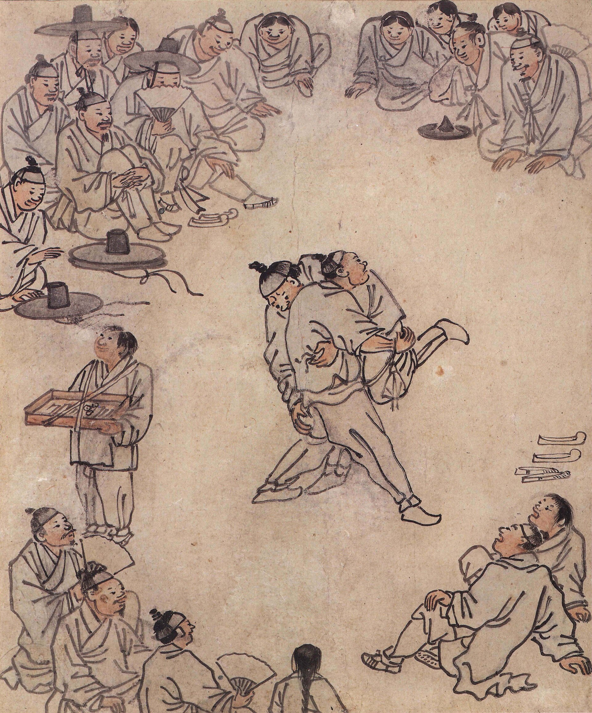
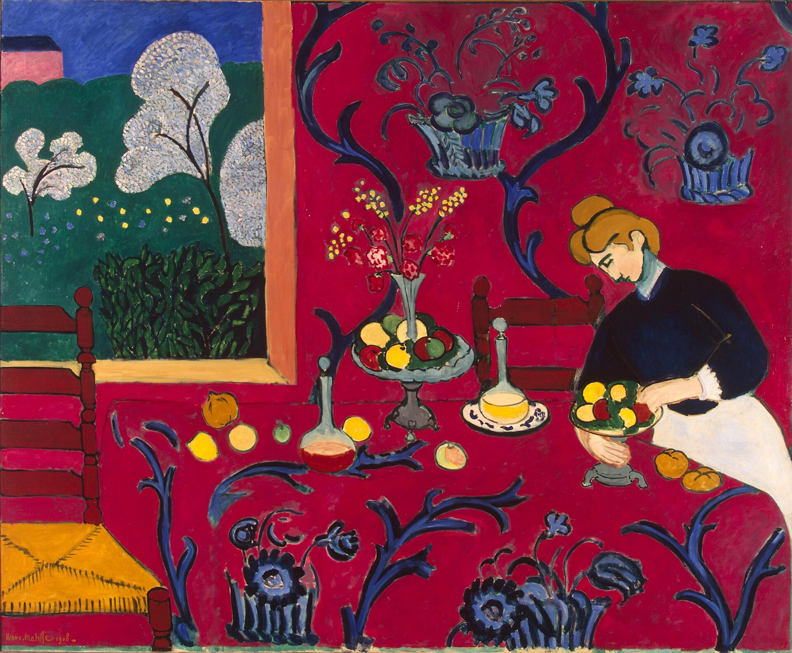

중학교 1학년 미술 · 감상 1차시
그림과 대화하는
네 걸음
“좋다 / 별로다”로 끝나는 감상에서 벗어나, 보이는 것에서 출발해 근거를 들어 작품을 이야기하는 방법을 배워요.
학습 목표
- 펠드먼 비평의 네 단계(기술 · 분석 · 해석 · 판단)를 설명할 수 있다.
- 조형 요소와 원리를 근거로 작품을 분석하고, 나의 생각을 글로 쓸 수 있다.

1단계
기술
무엇이 보이나? 보이는 것만 그대로 적기
2단계
분석
어떻게 짜여 있나? 조형 요소와 원리로 살피기
3단계
해석
무엇을 말하려 하나? 증거로 의미 추측하기
4단계
판단
가치 있는 작품인가? 관점을 정해 평가하기
눈 → 머리 → 마음 → 판단, 순서대로 올라가요. 앞 단계가 뒤 단계의 근거가 됩니다.
먼저 예시를 살펴볼까요?

🔍 눌러서 크게 보기
김홍도, 〈씨름〉 · 작품을 크게 보고 구석구석 살펴보세요.
🙂 몸풀기 — 첫 느낌 한마디 떠오른 느낌은 여기 적어 두고, 기술 단계에서는 잠시 내려놓아요.
1단계
기술
탐정처럼 눈에 보이는 것만 그대로 적어요. 느낌이나 짐작은 아직 넣지 않아요.
연습: 기술일까, 아닐까?
문장마다 골라 보세요.
👀 관찰 미션
작품 정보 카드 열기
- 작가
- 김홍도 (1745~?) · 호는 단원(檀園)
- 제목
- 〈씨름〉
- 재료
- 종이에 먹과 옅은 채색 (수묵담채)
- 크기
- 약 27 × 23 cm
💡 “재미있어 보인다”, “아마 ~일 것이다”는 기술이 아니에요. 누가 봐도 똑같이 보이는 사실만 써요.
🔍 눌러서 크게 보기
김홍도, 〈씨름〉 · 선, 색, 배치를 살펴보세요.
2단계
분석
기술에서 찾은 것들이 어떻게 짜여 있는지 조형 요소와 원리로 살펴요.
생각해 볼 질문
- 그림을 보면 눈이 가장 먼저 어디로 가나요? 왜 그곳으로 갈까요? (강조)
- 사람들은 어떤 모양으로 배치되어 있나요? (구도)
- 구경꾼 무리들은 화면의 어디 어디에 놓여 있나요? 한쪽으로 쏠려 있나요? (균형)
- 선은 굵은가요, 가는가요? 색은 진한가요, 옅은가요? 어떤 느낌을 주나요?
- 씨름꾼의 몸은 어느 방향으로 기울어 있나요? 움직임이 느껴지나요? (동세)
조형 요소
조형 원리
구도
💡 용어가 헷갈리면 미술의 언어 사전을 열어 확인해요. “무엇이 + 어떻게 + 그래서 어떤 효과”로 쓰면 좋아요.
🔍 눌러서 크게 보기
김홍도, 〈씨름〉
3단계
해석
기술과 분석에서 모은 증거로 작품의 의미를 추측해요.
생각해 볼 질문
- 작가는 이 그림으로 무엇을 보여 주고 싶었을까요?
- 내가 그림 속 한 사람이라면 무슨 생각을 하고 있을까요? (구경꾼, 엿장수, 씨름꾼…)
- 내가 작가라면 이 작품에 어떤 제목을 붙이고 싶나요? 왜 그런가요?
해석을 돕는 배경 정보
- 시대
- 조선 후기, 18세기 후반
- 양식
- 풍속화 — 서민들의 평범한 일상을 그린 그림
- 소장
- 국립중앙박물관 · 『단원 풍속도첩』 중 한 점 (보물)
💡 “~인 것 같다”로 끝내지 말고, “왜냐하면 그림에서 ~가 보이기 때문이다”로 근거를 붙여 보세요.
🔍 눌러서 크게 보기
김홍도, 〈씨름〉
4단계
판단
이 작품은 감상할 가치가 있을까요? 관점을 정하고, 앞 단계의 근거로 판단해요.
어떤 관점으로 판단할까? — 교과서 ‘미술 비평의 관점’
하나 이상 골라 보세요. 고른 관점마다 질문이 나와요.
나의 감상문
각 단계에서 쓴 글이 모였어요. 스스로 점검한 뒤 복사하거나 인쇄해 제출하세요.